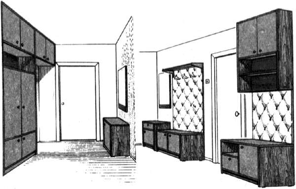
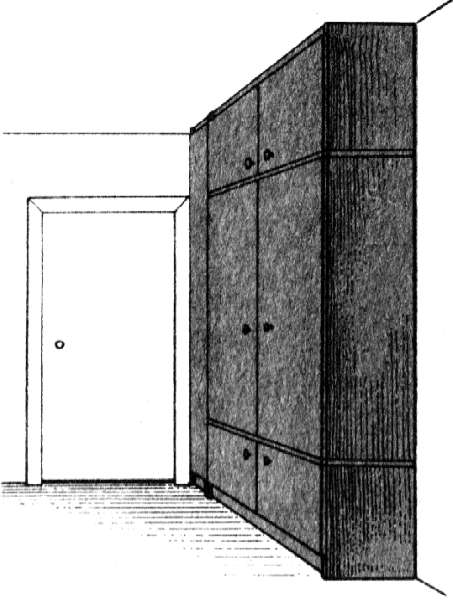

Планировка прихожей и мебель.

Пожалуй, оборудование прихожей для большинства горожан является самой большой проблемой. В прихожей снимают и надевают верхнюю одежду, хранят ее, встречают и провожают гостей, размещают некоторые предметы быта… Хочется перечислять и дальше, потому что многое хотелось бы делать и иметь именно в прихожей, но не позволяет площадь прихожей. В этом как раз и состоит проблема: площадь прихожей у большинства из нас мала. Вот и ломают голову умельцы и изобретатели, как здесь можно создать уют, рационально использовать ограниченное пространство.
Заметим, что и проектов мебельных изделий, разработанных любителями, больше всего именно для прихожей.
В большинстве современных квартир при оборудовании прихожих приходится учитывать каждый сантиметр площади пола и стен. Если прихожая длинная и узкая, оборудование (мебель) может быть расположено вдоль одной стены. В таком случае в состав комплекта оборудования войдут: вешалка для одежды и головных уборов, тумбочка для мелких предметов, зеркало, тумба для обуви, которая одновременно служит местом для сидения, место для зонтов. Это размещают вдоль одной из глухих стен. Если остается свободное место, можно установить напольный шкаф для хранения сезонных вещей. В нем на полках и в нишах найдет себе место телефон, можно поставить покупки, принесенные из магазина, положить корреспонденцию, ключи, перчатки, другие мелочи.
Над шкафом хозяева располагают настенные полки для самых разных предметов.
Лучшим вариантом для прихожей, если позволяют размеры, будет оборудование встроенного шкафа для верхней одежды и, если останется место, для пылесоса, спортивного инвентаря (лыж, коньков, ракеток и т. п.), чемоданов, сумок, портфелей и т. п. В зависимости от габаритов размещаемых предметов конструкция такого шкафа может быть различной, ниши шкафа могут быть открытыми и закрытыми, дверки могут быть на петлях, раздвижными, откидными, шторными, т.е. все зависит от наличия места, фантазии и потребностей хозяина, доступности и выбора материалов. Максимальная глубина шкафа для размещения одежды на штанге принята 600 мм, для остальных вещей она может быть меньшей – до 400-360 мм.
Коль скоро определились с внешними габаритами шкафа, которые диктует площадь прихожей, проектируют внутреннее пространство шкафа. Оно должно иметь функциональное и гибкое решение. Наиболее эффективными можно назвать идеи, связанные с применением передвижных или переставных полок-перегородок, которые при необходимости можно снять, переустановить для упорядочения хранения и наилучшего просматривания предметов в зависимости от сезона и пр. Как правило, на внутренних плоскостях шкафа и дверок устанавливают крючки, штанги, держатели, защелки и другую фурнитуру на все случаи жизни.
Материалом для изготовления такого шкафа служат столярные, древесностружечные и древесноволокнистые плиты, фанера, доски, бруски и рейки. Поверхности элементов шкафа могут быть облицованы шпоном, синтетическими пленками, пластиком, имитирующим ценные породы древесины. В зависимости от условий и вкуса внутренние поверхности шкафа могут быть окрашены, оклеены обоями или задрапированы.

Рис. 88. Варианты оборудования прихожей
Обязательный атрибут прихожей – зеркало. Зеркало можно повесить на свободной (от мебели) стене, а с двух сторон зеркала укрепить бра. Зеркало, как это отмечалось, может стать доминирующим объектом прихожей. Впечатление в ансамбле со светильниками значительно усилит резная рама для зеркала. Как правило, под зеркалом располагают полочку (две) для мелких предметов, здесь может стоять телефон.
Иногда на стенах прихожей размещают мелкие декоративные украшения: панно, маски и т. п. Если есть место, делать это не возбраняется. Но следует учитывать, что размер этих украшений должен быть таким, чтобы их можно было рассмотреть в крайне ограниченном пространстве прихожей, т.е. они должны быть действительно небольшими. И еще: большое количество украшений на пятачке прихожей смотреться не будет, надо соблюдать меру. Сказанное относится и к украшениям мебельных изделий, находящихся в прихожей. Вряд ли кто-нибудь оценит богатую орнаментальную композицию на фасаде встроенного шкафа в тесной прихожей, в которой двум человекам нельзя разойтись.
Случается, что в помещении прихожей нет вообще. Говорить, что это обстоятельство создает определенные неудобства, значит лукавить. На лицо дискомфорт. Выйти из такого положения можно довольно-таки просто: достаточно устроить небольшую вешалку-перегородку, убив тем самым сразу двух зайцев.
(иллюстрация отсутствует)
Рис. 89. Вешалка-перегородка
Конструкция этого мебельного проекта простая. Каркас состоит из четырех деревянных брусков сечением 40 ? 60 мм, укрепленных на полу враспор с потолком с помощью клиньев или распорных винтов. Стенки делают из досок тех же твердых пород, что и бруски, склеенных между собой, или из древесностружечной плиты. Древесностружечную плиту в этом случае облицовывают шпоном или синтетической пленкой. Стенки крепят к брускам изнутри шурупами на расстоянии друг от друга 120-150 мм. Заднюю стенку, обращенную к основной зоне жилого помещения, делают из древесноволокнистой плиты, облицованной с двух сторон декоративной пленкой. Внутреннюю сторону рекомендуется облицевать пленкой, имитирующей другую породу дерева, более светлую или имеющую гладкий светлый тон. Облицованную заднюю стенку крепят шурупами в выбранные четверти на задних кромках боковых стенок.
Из брусков твердой породы сечением 30 ? 30 мм делают нижнюю и верхнюю полки и вставляют снизу и сверху в отверстия боковых стенок с выступом на 10-15 мм. Нижняя полка устанавливается на высоте 400-450 мм от пола, верхняя – на высоте 1700-1800 мм. Бруски верхней полки устанавливают на расстоянии 30-55 мм друг от друга и один из них служит одновременно штангой для плечиков. На боковых стенках на разном по высоте расстоянии устанавливают крючки для сумок, зонтов, других предметов.
Конструкция вешалки-перегородки может быть усложнена, например, для двустороннего использования. При этом на другой стороне могут располагаться полки для книг или других вещей. Отделывают вешалку прозрачным лаком, покрывая изделие 3 pаза.
Очень часто столяру-любителю приходится делать необходимые мебельные изделия из деталей старой мебели. Что и говорить, отслужившая свой срок мебель, облицованная шпоном ценных пород древесины, может послужить в качестве превосходного материала для устройства самых разных чрезвычайно полезных вещей – шкафов, полок, антресолей.
Если для изготовления новой вещи приходится воспользоваться материалом мебели, пришедшей в негодность, при разборке старого изделия нельзя допускать порчи щитов и других деталей. Важно также сохранить лицевую и крепежную фурнитуру, она может пригодиться при сборке нового изделия. Надо иметь в виду, что старая фурнитура сама по себе может представлять ценность.
Рассмотрим проект встроенного шкафа. Перед разработкой проекта применительно к конкретному месту следует составить спецификацию на имеющиеся детали старого шкафа с указанием габаритных размеров. Спецификация может стать отправным пунктом при конструировании и комплектовании нового изделия недостающими деталями. Вообще, торопиться с разборкой старого шкафа не следует. В некоторых случаях сохраняют и используют общие очертания или часть изделия со старыми крепежными деталями. Понятно, что такой задел значительно упрощает работу, не требует больших подгоночных работ. Вместе с тем, стараться сохранить каркас старого изделия, если он плохо вписывается в новую конструкцию, будет также неправильно. Зачем закладывать какие бы то ни было неудобства в новую вещь? Очевидно, надо довольствоваться тем, что есть, и использовать детали старого шкафа – щиты, дверки, другие детали, а остальные необходимые элементы конструкции создавать заново.
Опыт свидетельствует, что при разборке трехстворчатого шкафа получается достаточно материала для оборудования, например, небольшой прихожей – можно сделать встроенный шкаф с антресолями и ящиками для обуви.

Рис. 90. Шкаф для прихожей из щитовых материалов
Сначала в прихожей выбирают наиболее удобное место для шкафа. Он может иметь две дверки, неоткрывающийся сборный элемент служит для навески левой двери, а правая дверь навешивается на боковую стенку каркаса. Глубину шкафа скорее всего продиктует простенок от входной двери, 350 мм вполне достаточно. Если есть возможность глубже, еще лучше. При наличии материала над шкафом можно сделать антресоли, а в нижней части – самое подходящее место для обувного ящика.
Несмотря на простоту конструкции, лучше все-таки разработать чертеж, чтобы уточнить детали и размеры, предусмотреть крепежные соединения. Еще лучше, если есть возможность осмотреть встроенный шкаф такой конструкции где-нибудь в натуре. Затем приступают к разметке и заготовке деталей.
Несколько практических замечаний при работе с полированными щитами. Пилить их можно только с лицевой стороны, пользоваться следует ножовкой с мелким зубом во избежание глубоких трещин лаковой пленки и сколов плиты. Полученные кромки щитов аккуратно застрагивают рубанком или фуганком и сверлят отверстия под шканты.
Крепить элементы шкафа можно по выбору: к стене или к щиту из 10-миллиметровой фанеры, закрепленному на стене. Щит облицовывают шпоном, пластиком, пленкой или другим искусственным материалом. Размер щита равен ширине и высоте отделения для одежды, закрепляют его шурупами к пробкам, установленным в стене. К фанере и боковым стенкам шкафа крепят разъемные элементы винтовых стяжек.
Значение имеет последовательность сборки шкафа. Сначала устанавливают боковые стенки шкафа для обуви и крепят их к стенке шурупами с помощью металлических уголков или деревянных брусков. На боковые стенки на шкантах устанавливают горизонтальный щит, на него в свою очередь ставят боковые стенки основного отделения шкафа. Эти элементы крепят особенно прочно к стене стяжками. На шкантах, укрепленных в кромках боковых стенок шкафа, устанавливают горизонтальный щит. При этом задняя кромка опирается на фанерный щит задней стенки. Боковые стенки антресоли крепят на короткие шканты, установленные на горизонтальном щите.
После тщательно выверенных по вертикали и горизонтали плоскостей собранного шкафа навешивают дверки, затем крепят защелки и ручки.
Внутри на заднюю стенку шкафа крепят полку для головных уборов, крючки для одежды можно располагать так, как это удобнее.
Когда сборочные работы завершены, остается освежить лаком облицованные поверхности шкафа. Очевидно, в каких-то случаях действительно будет достаточно только освежить лаковое покрытие, в других его придется реставрировать и покрывать шкаф лаком как новое изделие.
Хотелось бы предостеречь читателя от довольно распространенной ошибки, которую совершают многие, кто берется делать в прихожей шкаф. Понятно наше желание сделать как можно большие емкости-хранилища для самых разных вещей и предметов быта. Однако во всех случаях надо помнить о том, что прихожая сама по себе не резиновая и чрезмерно большой шкаф будет «теснить» человека, он и прихожую превратит в кладовку. Чтобы этого не случилось, на этапе разработки чертежа или эскиза надо уточнить размеры шкафа в натуре, т.е. с помощью щитов и досок оградить пространство прихожей, которое должен занять шкаф. Это позволит заранее оценить как площадь, которую займет шкаф, так и площадь, которая останется членам семьи, чтобы одеться-раздеться, обуться, осмотреть себя в зеркале и т.д.